USAGE
Base use
EXAMPLE
Changes from the usual forms
These are possible readings, not automatic meanings. Compare the speakers’ usual forms, tone, surrounding words, and who else is present.

THAI PRONOUNSSelect a first-person form and a second-person option to see usage notes and examples.
Select a first-person form.
Select a second-person form.
These are possible readings, not automatic meanings. Compare the speakers’ usual forms, tone, surrounding words, and who else is present.
Choose according to the person being discussed and your attitude toward them. Your I–you pairing does not determine this choice.